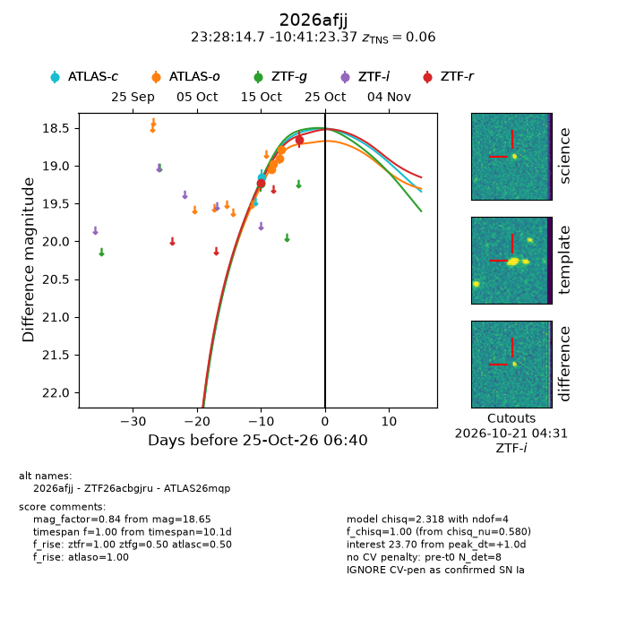
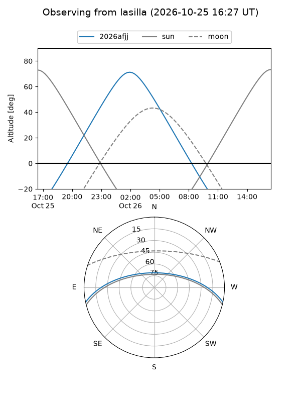
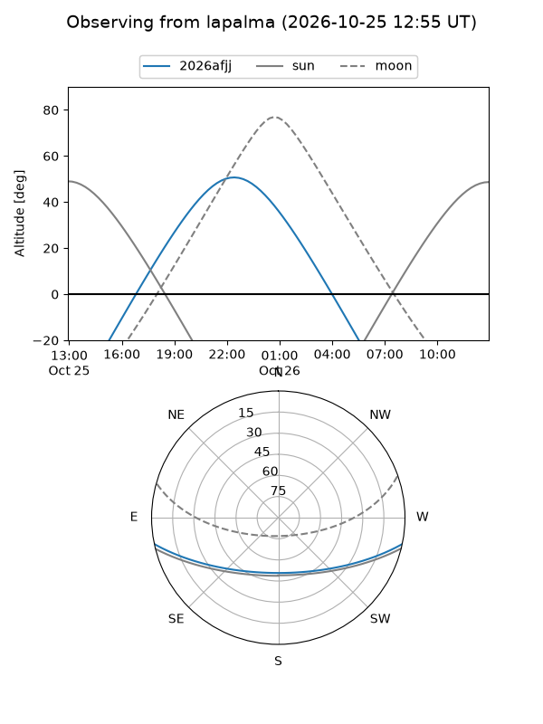
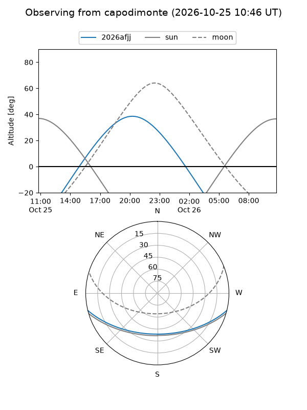
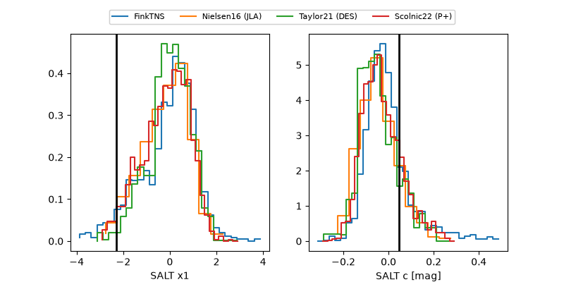

2026afjj
Target 2026afjj at 2026-10-25 18:31
Aliases and brokers:
FINK-ZTF: ztf.fink-portal.org/ZTF26acbgjru
Lasair-ZTF: lasair-ztf.lsst.ac.uk/objects/ZTF26acbgjru
ALeRCE-ZTF: alerce.online/object/ZTF26acbgjru
YSE-PZ: ziggy.ucolick.org/yse/transient_detail/2026afjj
TNS name: wis-tns.org/object/2026afjj
Direct TNS query: direct search
alt names
ZTF26acbgjru (ztf,fink_ztf)
2026afjj (tns,yse)
ATLAS26mqp (atlas)
Coordinates:
equatorial (ra, dec) = 352.0612,-10.68982
equatorial (HMS+DMS) = 23:28:14.70,-10:41:23.37
galactic (l, b) = (68.9625,-64.44030)
Flags:
TNS type: SN Ia
TNS redshift: 0.0600
peak dt: +1.5
Photometry:
last atlasc=19.15, atlaso=18.79, ztfg=19.23, ztfr=18.65
1 atlasc, 4 atlaso, 1 ztfg, 2 ztfr detections
Lightcurve

Visibility



Additional plots
